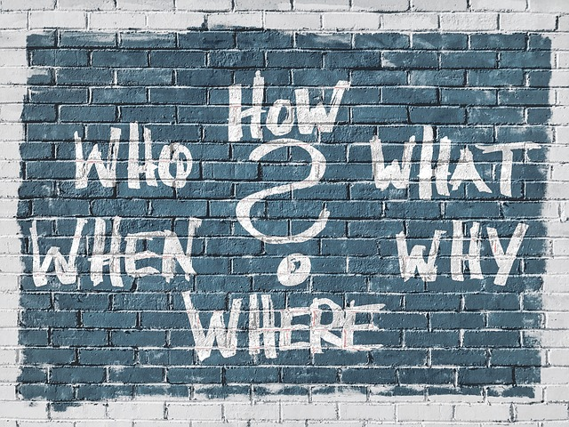

¿Qué es?
loencontre.com es una apliacación para que alguna persona que encuentre extraviado un carné de alguien perteneciente a la Universidad Pedagógica y Tecnológica de Colombia (UPTC), pueda publicar una fotografía del mismo,y contacte al dueño de dicho documento. El proyecto surge debido a que personas pertenecientes a la UPTC, principalmente estudiantes, pierden constantemente sus carnés, en muchas ocasiones éstos son extraviados dentro del campus universitario por lo que existe una gran probabilidad de que sea encontrado por otra persona perteneciente a la universidad. Cuando esto ocurre, se ha visto que pueden suceder dos cosas: 1) el carné es llevado a alguna dependencia de la universidad para ser entregado, o 2) se hace una publicación en los diferentes grupos de facebook que están formados en su mayoría por estudiantes de la universidad. Hacer una publicación en los grupos de facebook resulta para nuestro criterio ser la mejor opción pero tiene algunas inconvenientes, el algoritmo que usa facebook para determinar el orden en que se muestran las publicaciones puede llevar que el dueño del carné sea de los usuario que nunca vio la publicación, por lo que una aplicación que se encargue reconocer el nombre del dueño del carné y buscar coincidencias para posteriormente avisar a la mejor opcionada resulta siendo una aplicación oportuna.